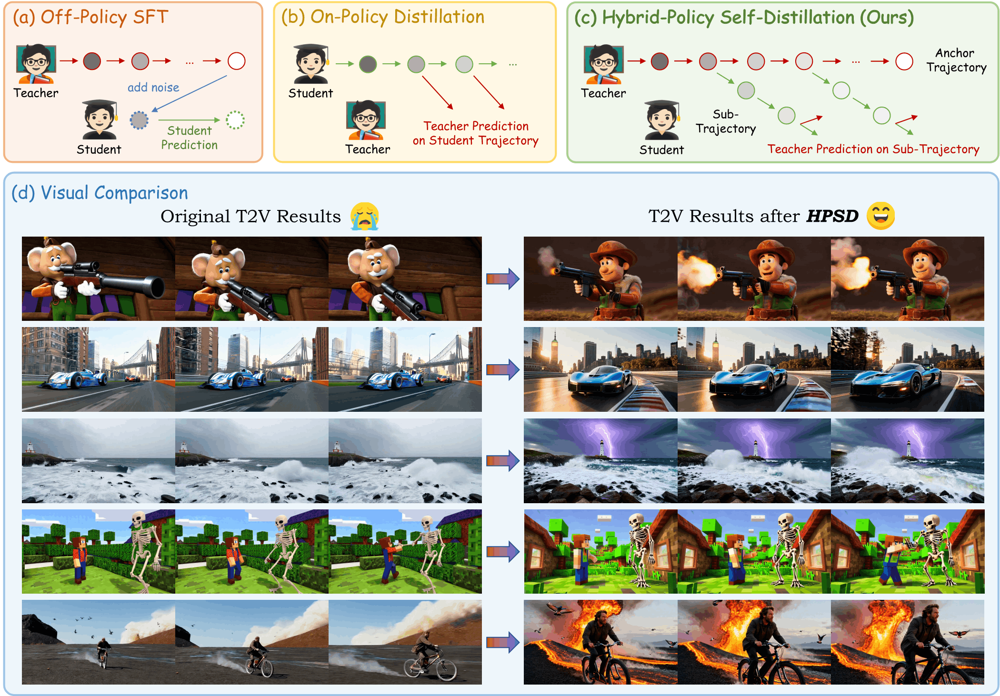
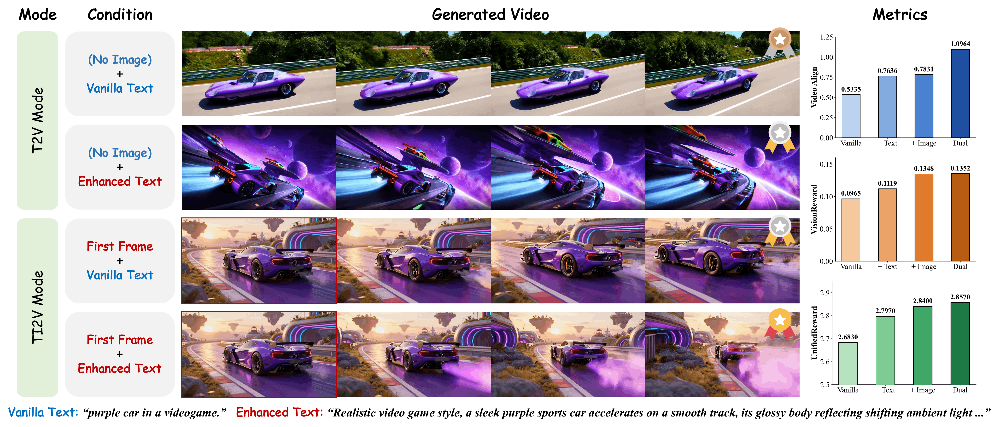
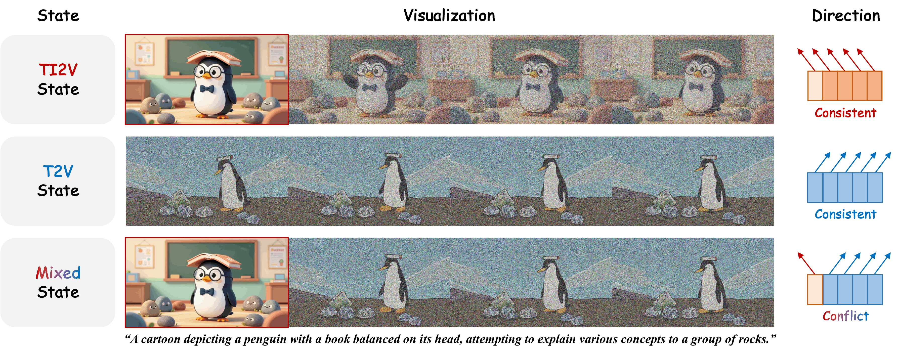
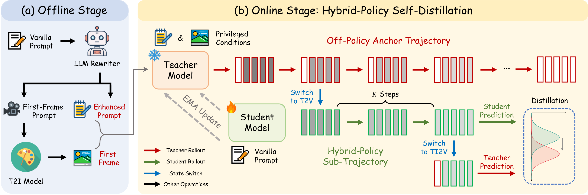
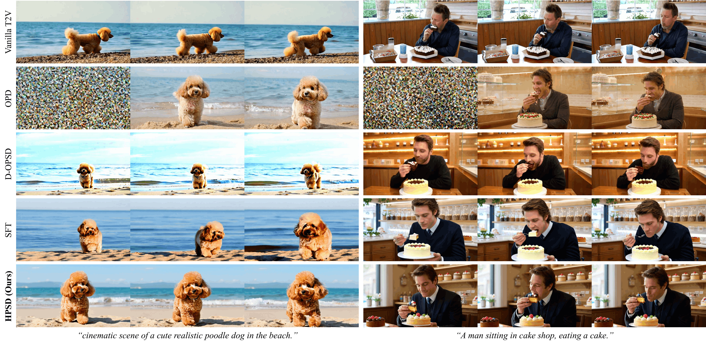
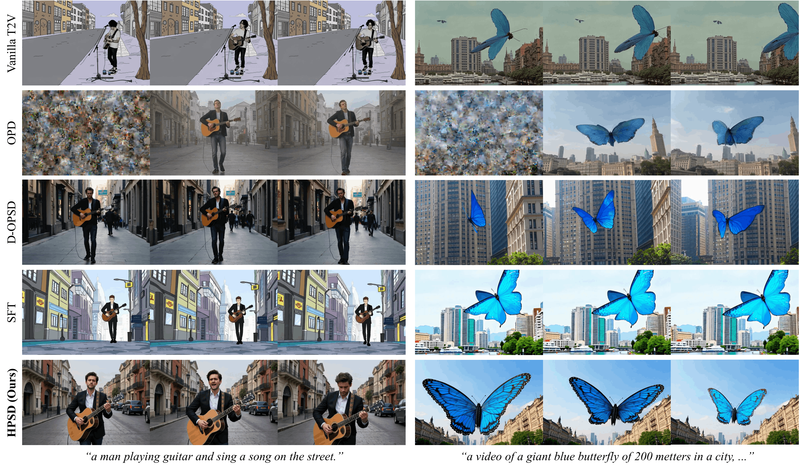
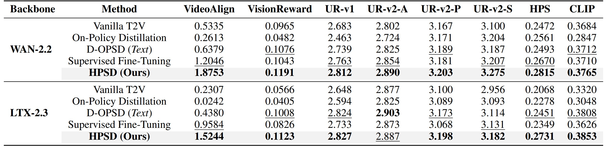
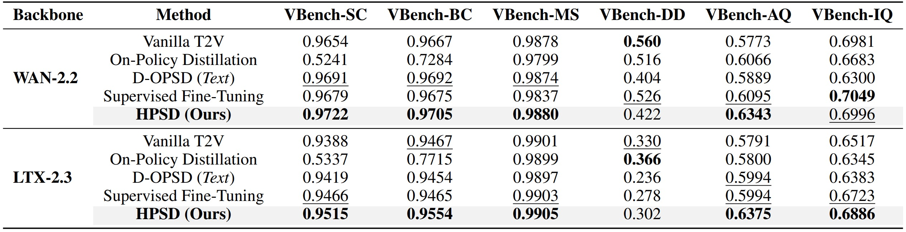

🧬 HPSD: Hybrid-Policy Self-Distillation for Text-Image-to-Video Diffusion Models
[Paper] [Code] [Huggingface] [BibTeX]

[Paper] [Code] [Huggingface] [BibTeX]

Vanilla T2V (left) vs. HPSD (right).
Text-Image-to-Video (TI2V) models are an emerging unified architecture, where a single model simultaneously supports text-to-video (T2V) and image-to-video (I2V) generation. Given a high-quality first frame or a detailed textual prompt, TI2V models unlock substantially better visual quality than their T2V mode, raising a natural question: can the capability elicited by such privileged conditions be internalized into the model's own base generation ability? A common approach toward this goal is model self-distillation. However, the most straightforward solution, supervised fine-tuning, follows an off-policy strategy: its supervision is confined to teacher-generated endpoints from a fixed offline distribution rather than student-visited states, lacking precise correction tailored to the evolving policy. Recent on-policy distillation methods instead suffer from condition-state mismatch, where supervision is steered toward the given first frame instead of the student's actual content, misleading the correction. To achieve self-distillation that absorbs the teacher's privileged prior while retaining precise policy correction, in this work, we propose Hybrid-Policy Self-Distillation (HPSD), a novel self-distillation framework where a single TI2V model acts as both teacher and student under different conditions: the teacher operates in TI2V mode with a high-quality first frame and an enhanced prompt, while the student runs in the base T2V mode with only the vanilla prompt. Specifically, the student inherits off-policy teacher trajectory points as anchors, locally refines them toward its own policy, and finally receives velocity-level supervision on these self-generated roll-outs. Extensive experiments demonstrate that HPSD significantly improves T2V performance while also delivering notable TI2V gains, effectively strengthening the model's base generation ability. Our code will be released at HPSD Repo.
In this work, we observe that: for a unified Text-Image-to-Video (TI2V) architecture, the TI2V mode conditioned on an additional high-quality first frame yields substantially better visual quality than the base T2V mode driven by a vanilla prompt, and that a detailed, well-crafted prompt alone brings considerable gains as well, as illustrated in Figure 2. Moreover, these two conditions from different modalities are complementary: a carefully designed first frame combined with an enriched prompt further improves the generation quality beyond either alone. We refer to such inputs as privileged conditions, and to the underlying capability they awaken as the condition-elicited capability of TI2V models. Notably, these quality differences arise from the same model operating under different external conditions, raising a natural question: can this condition-elicited capability be internalized into the model’s own base generation ability?

A common approach toward this goal is model self-distillation. Nevertheless, the most straightforward solution, supervised fine-tuning (SFT) on teacher-generated videos, is inherently off-policy: the student is supervised only on teacher terminal outputs from a fixed offline distribution, which drift away from the states it actually visits as training proceeds, precluding state-aware precise correction to the evolving policy, as shown in Figure 1 (a). Recent on-policy distillation methods query the teacher at student-visited states to provide dense, state-wise supervision along the student’s own roll-outs, effectively mitigating the exposure bias of off-policy training, as depicted in Figure 1 (b). In TI2V models, however, the privileged image condition is imposed as a fixed first frame that remains clean throughout denoising, whereas the student generates every frame without such conditioning. The teacher is thus queried on mixed states where the prescribed first-frame content coexists with the student’s own evolving content, and its supervision directs the denoising toward the former, conflicting with the latter—a failure we term condition-state mismatch (Figure 3). These limitations underscore the need for a new policy structure that absorbs the teacher’s privileged prior while retaining precise policy correction.

HPSD lets the student start from the teacher's trajectory and finish under its own policy, which proceeds in the following stages: (a) Offline Stage: Before training, the privileged conditions are synthesized for each prompt with off-the-shelf generative models. (b) Online Stage: During training, the teacher first rolls out its full denoising trajectory under privileged conditions, yielding an off-policy anchor trajectory that carries the condition-elicited generation content; The student then continues denoising from intermediate states of the anchor trajectory with its own velocity field, and is supervised by the teacher on the resulting sub-trajectory. Since the supervised states are anchored by the teacher's policy yet evolved by the student's, we term this design a hybrid-policy.

Qualitative comparisons with baseline distillation methods. HPSD consistently outperforms both off-/on-policy baselines in terms of texture rendering, detail synthesis, and prompt adherence across diverse scenarios and backbone models.


Quantitative assessments of the proposed HPSD and other baselines. HPSD demonstrates consistent superiority under both reward metrics (VideoAlign, VisionReward, UnifiedReward-v1/v2, frame-wise HPS/CLIP) and VBench evaluation.


More results. Vanilla T2V (left) vs. HPSD (right).
If you find this work helpful, please cite the following paper:
@article{bu2026hpsd,
title={HPSD: Hybrid-Policy Self-Distillation for Text-Image-to-Video Diffusion Models},
author={Bu, Jiazi and Ling, Pengyang and Zhou, Yujie and Wang, Yibin and Zang, Yuhang and Dai, Xuanlang and Ding, Shengyuan and Wei, Tianyi and Zhan, Xiaohang and Wang, Jiaqi and others},
journal={arXiv preprint arXiv:2608.13205},
year={2026}
}
Project page template is borrowed from FreeScale.